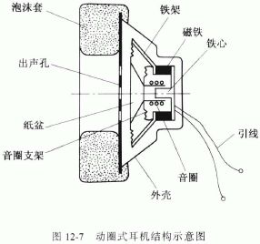
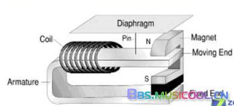
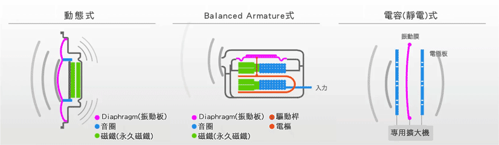

在几百RMB这个价位，基本耳机的类型只有动圈和动铁两种，且以动圈为主。
是最常见的耳机发声方式。原理是，电信号流过线圈，使得线圈在永磁体的磁场中受力振动，同时线圈是与振动片连接在一起的， 由此振动片振动发声。动圈耳机原理简单振动膜可以做的很大，从耳机到大型音响都能够胜任。它的特点是高中低三频衔接起来流畅， 声场也更加宽松自然，听感好，且具有出色的低音效果，所以声音表现方面会更加温暖一些。但是由于动圈是个开放的系统且电线直接 切割磁场会有反相电流，相比动铁下响应速度较慢且需哟更大一些的电流驱动，所以对于细节的把握并不那么精准。另外对于动圈而言， 发声单元越大越有优势，这也是一般情况下总觉得套头式的比入耳式的要听着好一些的原因。
动铁耳机的原理类似动圈，也是利用磁力带动振动片振动发声，只不过动铁不是线圈动，而是一片铁片在动。导线缠绕在铁片上， 电信号流过时，以铁片为芯感应出磁场，与永磁体的磁场相互作用产生振动。振动由一根针传输到振动膜上从而发声。
由于动铁的发声单元几乎可以做到密闭，且振动片小不需要动圈那样太多的空气参与到发声的过程中，所以它的声音隔离效果好， 且灵敏度高。灵敏度高意味着瞬时的细节表现和声音密度上更好。
